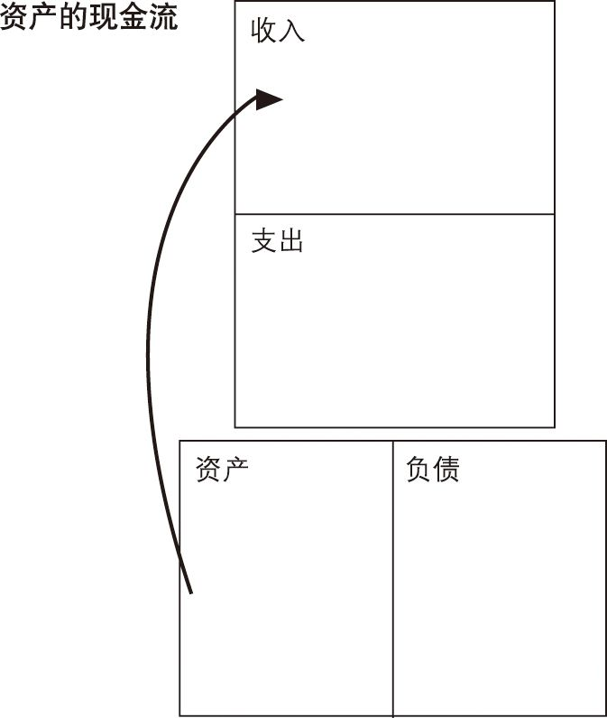
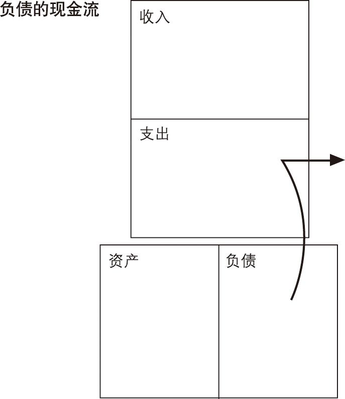

梗概
本书讲述了作者的成长经历以及从两爸爸身上学到的东西，一个穷爸爸是亲爸爸，另一个富爸爸是他的好朋友的爸爸。这两个人也分别代表了两种观念或两种思想，他们对于金钱的不同认识和行为，最终他们也有着不同的生活方式。“穷爸爸”强调“太多的钱是没有意义的”，只有学习好才能找到合适的工作，提倡多捐钱，但是从来没有很多钱，认为应该多交税，减少贫富差距，认为要保守稳定，不要冒风险；“富爸爸”强调要贪婪，“聪明人找更聪明的给他工作”，经常捐钱，回报社会，认为交税是穷人交得多，富人从来都想办法少交（在法律范围内），要勇于冒风险，但是要学习足够的知识，甚至有时候要快速学习。作者结合自己的经历，通过几个简单的例子说明了自己成功实现财务自由的过程。其中还讲述了一些理财的相关概念、常识和基础知识。
笔记
一本不错的理财入门书，可以和《小狗钱钱》一起看。
从书中学习了一些理财相关的概念，如资产和负债，有相当一部分人可能一辈子都没有搞清楚这两个概念，
资产是把钱放进你口袋里的东西，负债是把钱从你口袋取走的东西
虽然并不是确切的定义，但是也多少说明了一些尚未弄明白的东西，而弄明白以后也就知道下一步行动是要，多增加资产同时减少负债，但是资产是什么呢？比如：股票、债券、票据房地产和知识产权等，这些都可以在你不工作的时候给你带来额外的收入(当然有人肯定会说也有贬值时候啊，但是这就不是这里要考虑和讨论的了)。负债则包括各种抵押贷款，所以知道了并不是贷款买了房子，房子就是你的资产了，至少目前还不能算是，这里的房子不能给你带来一点收入，相反它会拿走你的钱，此时的房子是负债。总之就是资产会增加你的收入，而负债会加大你的支出。
在书中，也给了财富一个相当朴素的概念,
财富是支撑一个人生存多长时间的能力，或者说，如果我今天停止工作，我还能活多久？
可以想到，中产阶级和穷人离开工作一天就会焦虑，而拥有资产的富人并不需要拼命工作且甚至有时间去做自己想做的事，也不担心被解雇，而且生活得很好！“工人付出最大努力以免被解雇，而雇主提供最低工资以防止工人辞职。”这句话不是没有道理的。
想加法增加你的资产应该是实现财务自由的最好且唯一方法。
但是其中有很大一部分人都会恐惧，不敢冒一点风险，情愿过着原有的生活而不去改变，甚至看到别人要改变，也要摆一些吓人的结果来试图使对方保持原状，我想对于这些人说的话，听过就忘记好了。
而还有一些人从来不去改变，在自己的舒适区生活工作，认定自己的理论就从不改变，他们看不到事物的真相，例如当他们债务缠身的时候，一心只想着要加薪，通过提高收入来解决拮据的生活或者债务的麻烦，而事实是，即使他们收入提高了，但是他们的支出也会水涨船高，从而使得收入的提高也只是“治标不治本”，因而他们要做的并非加薪能解决的，他们要做出改变，而具体如何来做，目前，在我看来，这里则需要一些简单的策略（从《小狗钱钱》中看来的），可以将一部分收入划入到资产当中，即使有债务也可以选择长期来偿还，从而给自己积累一些资产，因为这样当债务还清的时候不会是一无所有，而是会有一部分属于自己的资产。
还有要学会投资自己，富人明白这个道理，他们不会推脱没有时间学习，也不会说太难了，学不会，他们时刻想着改变，因为脑子是自己最大的资产，脑子不灵光的话，就算有机会在眼前也估计不会看到。
。
另外选择投资等一定不要冲动，作者投资很多也是建立在很多知识贮备的前提下的，另外也学习了很多其它技能。
因此，不断投资自己是永远不会错的，时刻保持一颗学习的心。
希望早日实现财务自由，同时也祝愿看到这篇文章的人走到富人的行列。
书摘
- 规则：你必须明白资产和负债的区别，并且购买资产。
- “KISS”原则，即“傻瓜财务原则”（Keep It Simple Stupid）
- 富人得到资产而穷人和遗产阶级得到负债。
- 资产是能把钱放进你口袋里的东西；负债是把钱从你口袋取走的东西。
- 资产的现金流 
- 负债的现金流 
- 钱往往能暴露人性中那些可悲的弱点，并凸显人们的无知。
- 学校是生产好雇员而不是好雇主的地方。
- 财富是支撑一个人生存多长时间的能力，或者说，如果我今天停止工作，我还能活多久？
- 富人买入资产；穷人只有支出。中产阶级购买以为是资产的负债。
- 关注自己的事业。
- 真正的资产可以分为以下几类：
- 不需我到场就可以正常运作的业务。我拥有它们，但由别人经营和管理。如果我必须在那儿工作，那它就不是我的事业而是我的职业 了；
- 股票；
- 债券；
- 共同基金；
- 能够产生收入的房地产；
- 票据（借据）；
- 版税，如音乐、手稿、专利；
- 其他任何有价值、可产生收入或有增值潜力并且有很好销路的东西。
- 财商是由4个方面的专门知识构成的：
- 会计，也就是财务知识。
- 投资，钱生钱的科学。
- 了解市场，它是供给与需求的科学。
- 法律。
- 理财能手的3种技能：
- 如何寻找其他人都忽视的机会。
- 如何增加资金。
- 怎样把精明的人组织起来。
- 风险总是无处不在，要学会驾驭风险，而别总想回避风险。
- 工作（job）一词就是“比破产强一点”（just over broke）。
- 工人付出最大努力以免被解雇，而雇主提供最低工资以防止工人辞职。
- 从长远来看，教育比金钱更有价值。
- 生活就像去健身房，最痛苦的事情是作出锻炼身体的决定，一旦你过了这一关，以后的事情就好办了。
- 许多才华横溢的人之所以贫穷，就是因为他们只是专心于做好产品，而对商业体系却知之甚少。
- 成功所必需的管理技能包括：
- 对现金流的管理。
- 对系统（包括你本人、时间及家庭）的管理。
- 对人员的管理。
- 最重要的专门技能是对市场营销的理解。销售技能是个人成功的基本技能，它涉及与其他人的交往，包括与顾客、雇员、老板、配偶和孩子。而沟通能力如书面表达、口头表达及谈判能力等对一个人的成功来说更是至关重要。
- 得克萨斯谚语：“人人都想上天堂，却没有人想死。”大部分人都梦想发财，但却害怕亏钱，所以他们永远也进不了财富的天堂。
- 未经证实的怀疑和恐惧会使人们成为愤世嫉俗者。愤世者抱怨现实，而成功者分析现实。
- 如果贫僧不忙着工作或是与孩子在一起，就会忙着看电视、钓鱼、打高尔夫球和购物。总之，他们内心很清楚自己是在逃避一些很重要的事情。这就是懒惰最普遍的表现形式，一种通过忙碌掩饰下的懒惰。
- 怎么才能治疗这种惰性呢？答案就是要“贪婪”一点。
- 以下10个步骤来开发上帝赐予你的理财才能：
- 我需要一个超现实的理由——精神力量。
- 每天作出自己的选择——选择的力量。
- 慎重地选择朋友——关系的力量。
- 掌握一种模式，然后再学习一种新的模式——快速学习的力量。
- 首先支付自己——自律的力量。
- 给你的经纪人以优厚的报酬——好建议的力量。
- 做一个“印第安给予者”——无私的力量。
- 用资产来购买奢侈品——专注的力量。
- 对英雄的崇拜——神话的力量。
- 先予后取——给予的力量。